DTP Publisher Pro
How to make flyers, newsletters, greeting cards, invitations, labels, business cards and photo albums, and print them at home or take them to a print shop.
This manual is for DTP Publisher Pro 5.3. Press F1 in the program at any time to open it.
1Getting started
Starting the program
Double-click DTP Publisher.exe (or its shortcut on the desktop). A welcome picture shows for a few seconds while the program gets ready (click it to skip it), then the start screen appears.
The start screen
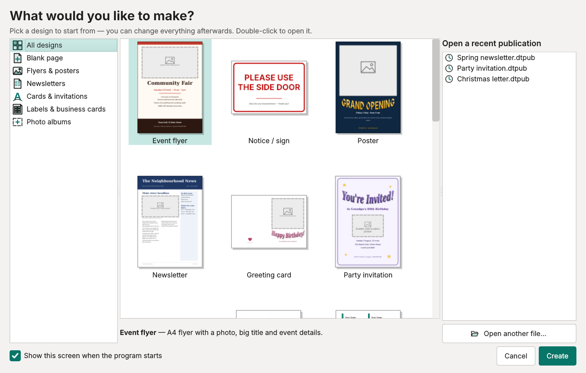
- Click a kind of design on the left (for example Cards & invitations) to see just those.
- Click a design to read what it is underneath, then press Create, or simply double-click it.
- Blank page gives you an empty page in a size of your choice.
- To carry on with something you made before, double-click it under Open a recent publication, or press Open another file…
The main window
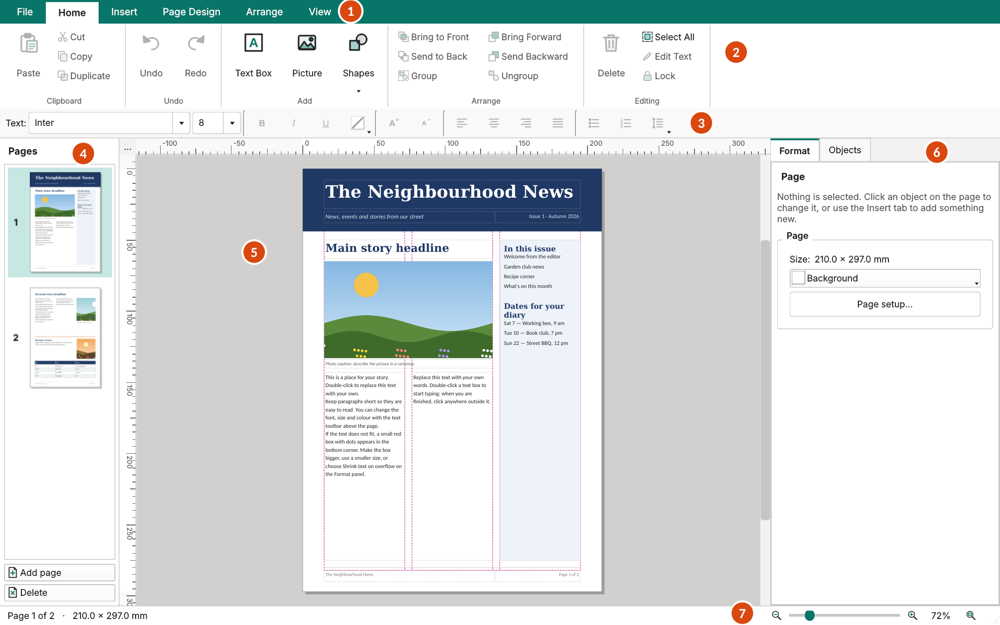
- Tabs. File, Home, Insert, Page Design, Arrange and View. Click one to show its buttons.
- The ribbon. The buttons for the tab you chose. Rest the mouse on any button to see what it does.
- The text bar. Font, size, bold, colour, alignment, bullets and line spacing for the words you are working on.
- Pages. A small picture of every page. Click one to go to it; drag it up or down to change the order; right-click it for more.
- Your page. This is what will be printed. The pink dashed lines are the margins and column guides; they don't print.
- Format and Objects. Format shows the settings of whatever you have clicked on. Objects lists everything on the page.
- Zoom. Make the page look bigger or smaller. The button on the far right shows the whole page again.
Making the buttons and writing bigger
Open File ▸ Preferences and choose a bigger Size of buttons and text (up to 200%). The new size is used the next time the program starts. In the same place, Look offers a light, a dark and a High contrast style.
2Your first flyer, step by step
The quickest way to learn is to change a ready-made design. This takes about ten minutes.
- On the start screen click Flyers & posters, then double-click Event flyer.
- Change the title. Double-click the words Community Fair. They are now ready for typing: select them and type your own title. Click on an empty part of the page when you have finished.
- Change the other words the same way: the date line, the list of things on, the address at the bottom.
- Put in a photo. Double-click the grey picture frame at the top and choose a photo from your computer. It is trimmed to fit the frame. To show a different part of the photo, use the sliders on the Format panel (see Pictures).
- Save it. Press Ctrl+S, choose a folder, type a name and press Save.
- Print it. Press Ctrl+P, check the printer and press Print.
3Words and text boxes
Typing and changing words
Words always live in a text box. To type in one, double-click it (or click it once and press F2). A blinking line shows where your typing goes. Click outside the box, or press Esc, when you are done.
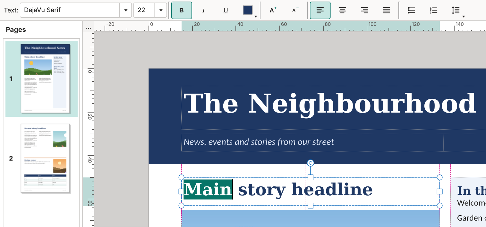
- Select words by dragging across them, or double-click a word. Then use the text bar: font, size, Bold, Italic, Underline, colour, bigger/smaller, alignment, bullets, numbering and line spacing.
- Change a whole box at once: click the box once (so it has handles round it, but you are not typing in it) and use the text bar. Everything in the box changes.
- To add a new box: Home ▸ Text Box (or Insert ▸ Text Box), then type.
When the words don't fit
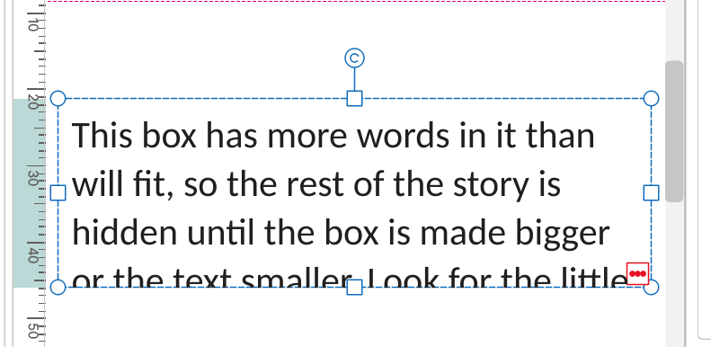
If there are more words than the box can hold, a small red marker appears in its bottom corner. You can:
- make the box bigger by dragging one of its handles;
- use a smaller text size; or
- click the box and, on the Format panel under Text box, set Fit to Shrink text on overflow (the words get smaller to fit), Best fit (the words grow or shrink to fill the box) or Grow text box to fit (the box gets taller).
On the same panel, Vertical puts the words at the top, middle or bottom of the box, and Inner margin sets the space between the edge of the box and the words.
A story that carries on in another box
For newsletters, a story can flow from one box into another, even on a different page:
- Click the first box.
- Choose Insert ▸ Continue Text.
- Click an empty text box (go to another page first if you like). Words that don't fit in the first box now carry on in the second, and move back and forth by themselves as you edit.
To stop it, click the first box and choose Insert ▸ Break Text Link.
Copying words from Word, a web page or an email
Copy as usual and press Ctrl+V in a text box. Fonts and paragraphs come with it. A table turns into lines of words with the columns separated by tabs, and any pictures in what you copied are left out. Put pictures in separately (next section) so you can move them freely.
4Pictures and photos
Putting in a photo
- Into a frame: double-click a grey picture frame and choose a photo.
- Anywhere: Home ▸ Picture (or Insert ▸ Picture) and choose a photo.
- Straight from a folder: drag a photo from a folder window onto the page, or onto a frame to fill that frame.
- An empty frame for later: Insert ▸ Picture Frame.
Photos from a phone are turned the right way up by themselves. Very large photos are made a sensible size so the file stays small, still sharp enough to print.
Choosing which part of the photo shows
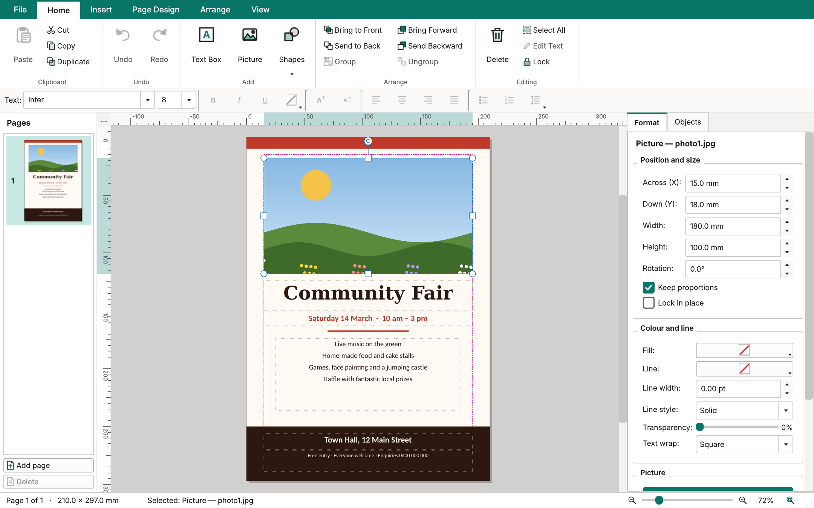
Click the photo once. On the Format panel, scroll down to Picture:
- Fit: Fill frame (crop) fills the frame and trims the edges; Fit inside frame shows the whole photo; Stretch squeezes it to the frame's shape.
- Show left ↔ right and Show top ↕ bottom slide the photo inside its frame, so you can choose which part is trimmed off.
- Round corners softens the corners.
- Make frame match picture shape changes the frame to the photo's own shape.
- Change picture… swaps in a different photo but keeps the size and position.
Under Colour and line you can give the photo a border (Line and Line width) and make it see-through (Transparency).
Words flowing around a photo
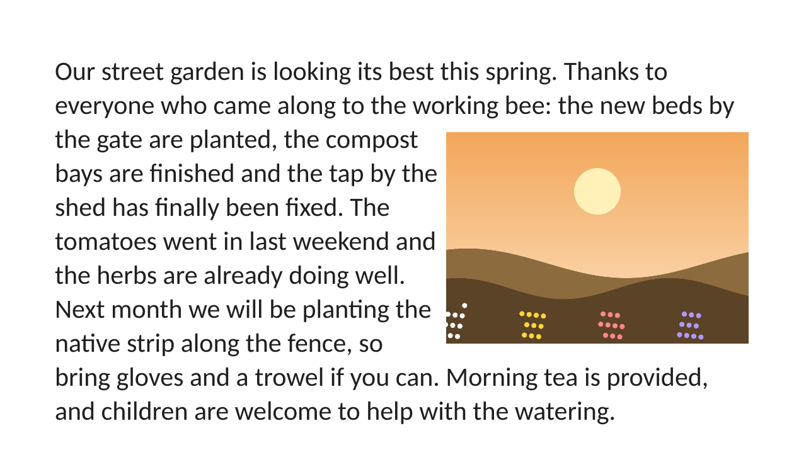
Put a photo on top of a text box and the words move round it. To change how, click the photo and choose one of these on the Arrange tab (under Text wrap), by right-clicking the photo and choosing Wrap Text, or with Text wrap on the Format panel:
| Choice | What happens |
|---|---|
| Wrap Square | Words flow down the side of the photo. |
| Wrap Top and Bottom | Words stop above the photo and carry on below it. |
| No Wrapping | The words stay where they are and the photo sits on top of them (or behind them, if you send it to the back). |
This works for any object, including a box of text placed over another story.
5Shapes, WordArt, tables and building blocks
Shapes and lines
Home ▸ Shapes or Insert ▸ Shapes gives a rectangle, rounded rectangle, oval, triangle, diamond, pentagon, hexagon, star, arrow, heart and line. On the Format panel, Fill is the colour inside, Line the colour of the edge, and Shape changes it into a different shape.
WordArt: decorative headings
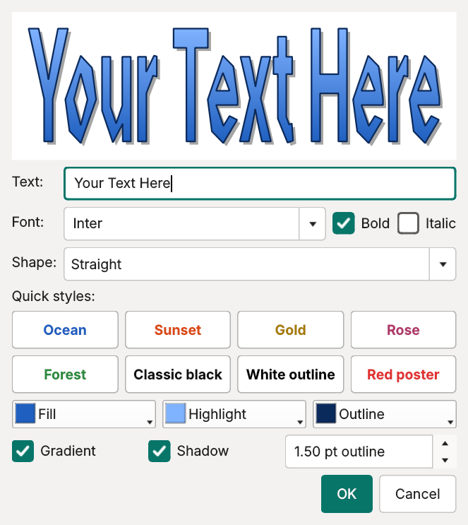
Insert ▸ WordArt. Type your words, pick a Shape (straight, arched, wave or bulge) and click one of the Quick styles, or choose your own colours. To change it later, double-click it.
Tables
Insert ▸ Table. Choose how many rows and columns, type into the cells (Tab moves to the next cell) and press OK. First row is a heading and Shade every other row make it easy to read. Double-click a table to change it.
Building blocks: ready-made pieces
The Insert tab has ready-made pieces to drop on the page: Heading Band, Footer, Heading and story, Pull quote, Sidebar box, Coupon, Page number and Today's date. A page number keeps itself correct when you add or move pages.
6Moving, sizing and lining things up
Selecting
Click something once to select it: it gets small handles round it and its settings appear on the Format panel. To select several things, hold Shift while clicking, or drag a box around them on an empty part of the page. Ctrl+A selects everything on the page; Esc lets go.
Moving, resizing and turning
- Move: drag it. For small steps use the arrow keys (hold Shift for bigger steps).
- Resize: drag a handle. Photos keep their shape.
- Turn: drag the little circle above it. Arrange ▸ Rotate Left 90°, Rotate Right 90° and the Flip buttons do it exactly.
- Exact sizes: type them on the Format panel under Position and size.
| Hold this while dragging | What it does |
|---|---|
| Shift | Move in a straight line, or resize without keeping the shape |
| Ctrl | Resize from the middle |
| Alt | Stop things snapping into line |
While you drag, red lines appear when something lines up with the page, the margins or another object, and it clicks into place.
Lining up and spacing out
On the Arrange tab: Align Left, Align Centre, Align Right, Align Top, Align Middle and Align Bottom line up the selected things with each other. With just one thing selected, they line it up with the page margins, handy for centring a title. Distribute Across and Distribute Down space three or more things evenly.
In front and behind
Things on a page are stacked like pieces of paper. Bring to Front and Send to Back (and Bring Forward / Send Backward, one step at a time) change the order. Use Send to Back to put a photo or coloured shape behind words.
Group, lock and copy
- Group (Ctrl+G) joins the selected things so they move as one; Ungroup (Ctrl+Shift+G) splits them again.
- Lock stops something being moved by accident. Click Lock again to unlock it. Ticks on the Objects tab also lock and hide things.
- Duplicate (Ctrl+D) makes a copy next to the original.
Guides and the grid
Drag from the ruler at the top or left onto the page to add a guide line you can line things up against. Drag a guide off the page to remove it, or use Page Design ▸ Remove Ruler Guides. The View tab turns guides, the grid and dotted box outlines on or off, and chooses what things snap to.
7Pages and page setup
Adding, copying and moving pages
- Add page (under the page pictures on the left, or on the Page Design tab) adds a page after the one you are on.
- Duplicate Page copies the page with everything on it. Good for a second page in the same style.
- Delete removes the page you are on (and Ctrl+Z brings it back).
- Drag a page picture up or down to change the order. Right-click it to rename it.
- Ctrl+PgDn and Ctrl+PgUp go to the next and previous page.
Paper size, margins and colour
The Page Design tab has quick menus for Size, Orientation (tall or wide), Margins and Page Colour. For everything at once, click Page Setup:
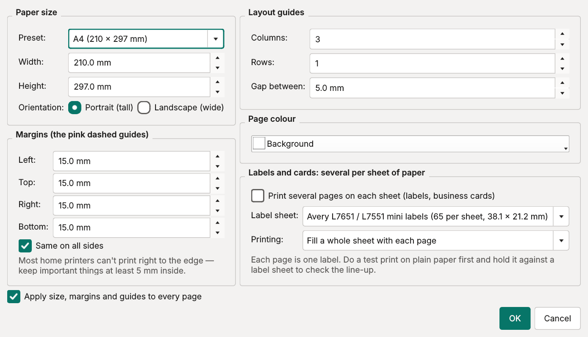
- Paper size: choose a size or type your own.
- Margins are the pink dashed lines. Most home printers can't print right to the edge, so keep important things at least 5 mm inside the paper.
- Layout guides divide the page into columns (and rows) to help line things up. They don't print.
- Labels and cards: see Labels below.
- Apply size, margins and guides to every page changes all the pages, not just this one.
8Newsletters, cards, labels and albums
Newsletters
Start from Newsletter on the start screen: two pages in three columns with a heading, stories, photos, an events table and page numbers. Replace the words and photos with your own. If a story is too long for its box, let it carry on in another box with Insert ▸ Continue Text (see Words and text boxes). For more pages, use Duplicate Page and change the words.
Greeting cards
The Greeting card design folds in half and has two pages: Outside and Inside.
- Print the Outside page only (it is first in the list of pages).
- Put the same sheet back in the printer, turned over (which way round depends on your printer; try it on plain paper first and mark the top with a pencil).
- Print the Inside page.
- Fold in half.
Party invitation (5 × 7 inches) and Postcard (6 × 4 inches, photo on the front, message and address on the back) work the same way.
Address labels and business cards
There are two ways, depending on whether every label is the same.
All the same (your own address, or business cards):
- Design one label or card, then group it (select everything on it and press Ctrl+G).
- Choose Arrange ▸ Fill Page with Copies, set the gaps (if any), and press OK. The page fills with copies.
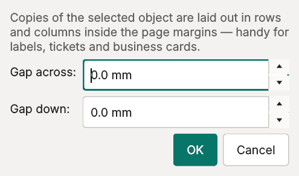
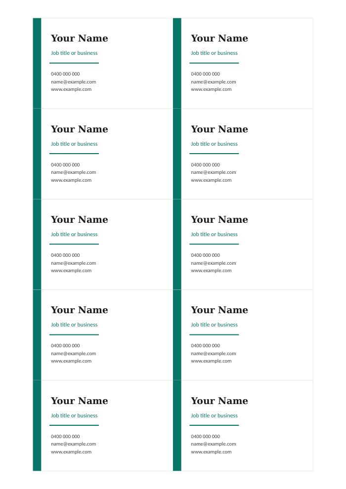
All different (a different address on each label):
- Start with a blank page and open Page Design ▸ Page Setup.
- Tick Print several pages on each sheet (labels, business cards) and choose your Label sheet (the Avery number is printed on the packet). The page becomes the size of one label.
- Set Printing to Print the pages one after another (one label each) and press OK.
- Type the first address. For each next one, use Duplicate Page and change the words.
- Print. Each page lands on its own label. Printing and PDFs both place them correctly on the sheet.
With Printing set to Fill a whole sheet with each page instead, each page prints a whole sheet of the same label: another way to do your own address labels.
Label sheets included: Avery L7651/L7551 (65 mini labels), L7160 (21), L7159 (24), L7161 (18), L7162 (16), L7163 (14), L7173 (10), L7165 (8), and 10 business cards per sheet. The Address labels design on the start screen is a whole A4 sheet of 14 boxes laid out to fit L7163 labels: just type an address in each box.
Photo albums and collages
Photo album pages gives landscape pages of photo frames with captions; Photo collage is a 12 × 12 inch scrapbook page. Drag photos from a folder straight onto the frames, then type the captions. Add more pages with Duplicate Page.
Signs, posters and certificates
Notice / sign is a big, bold A4 sign easy to read from across a room. Poster is A3. On an A4 printer the A3 poster is shrunk to fit the paper by itself; for full size, save it as a PDF and have a print shop print it. Certificate is A4 landscape with a border and signature lines.
9Saving, printing and sharing
Saving
- Save (Ctrl+S). The first time, you choose a folder and a name. Your work is saved as a .dtpub file, with all the photos inside it, so it can be copied to a USB stick or another computer in one piece.
- Save As (Ctrl+Shift+S) saves a copy under a new name, for example to start next month's newsletter from this one.
- When you save, the previous version is kept next to it as name.dtpub.bak, just in case.
If the computer stops unexpectedly
A recovery copy of your work is saved every few minutes. If the power goes off or the program closes before you saved, the next time it starts it offers to bring your work back:
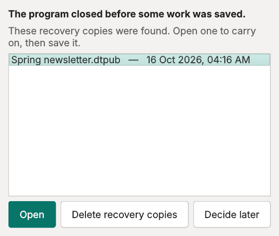
Click Open, then save it straight away with File ▸ Save As.
Printing
File ▸ Print (Ctrl+P). Choose the printer, which pages, and how many copies. A page that is the same size as the paper prints at exactly the right size, so labels and cards line up. Other sizes are shrunk or enlarged to fit the paper.
A PDF to email or take to a print shop
File ▸ Save as PDF. A PDF looks the same on any computer, phone or tablet, and print shops are happy to print from it. Photos in it are kept at print quality (300 dpi).
A picture of the page
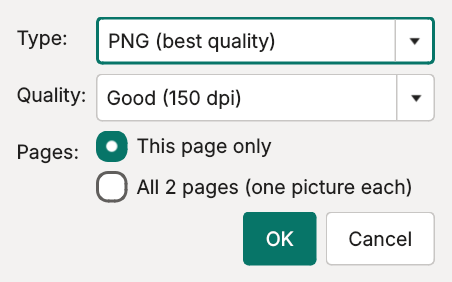
File ▸ Save as Picture saves a page as a picture: JPEG is smaller and good for email or Facebook; PNG is the best quality. Choose Screen / email quality for sending, or Print quality to print it elsewhere.
10Microsoft Publisher files
Opening a Publisher (.pub) file
Open it like any other file, with File ▸ Open, by dragging it onto the window, or by double-clicking it (see below). This needs the free program LibreOffice installed on the computer. You never see LibreOffice; it reads the file in the background. If it isn't installed, the program says so and offers a button to get it.
- Big files can take a minute or two.
- Check the result over: fonts, spacing and text wrapping can differ a little from Publisher.
- Your .pub file is never changed. When you save, a new DTP Publisher (.dtpub) file is made.
Opening files by double-clicking them
To open .dtpub and .pub files by double-clicking them in File Explorer:
- Open File ▸ Preferences.
- Under Double-click to open, tick DTP Publisher publications (.dtpub) and, if you like, Microsoft Publisher files (.pub).
- Press OK.
If another program was already chosen for those files (often the case for .pub), Windows asks you to confirm the change yourself. The program tells you, and offers to open Windows Settings. There, choose DTP Publisher Pro for .pub. Untick the boxes to go back to how it was before.
11Preferences
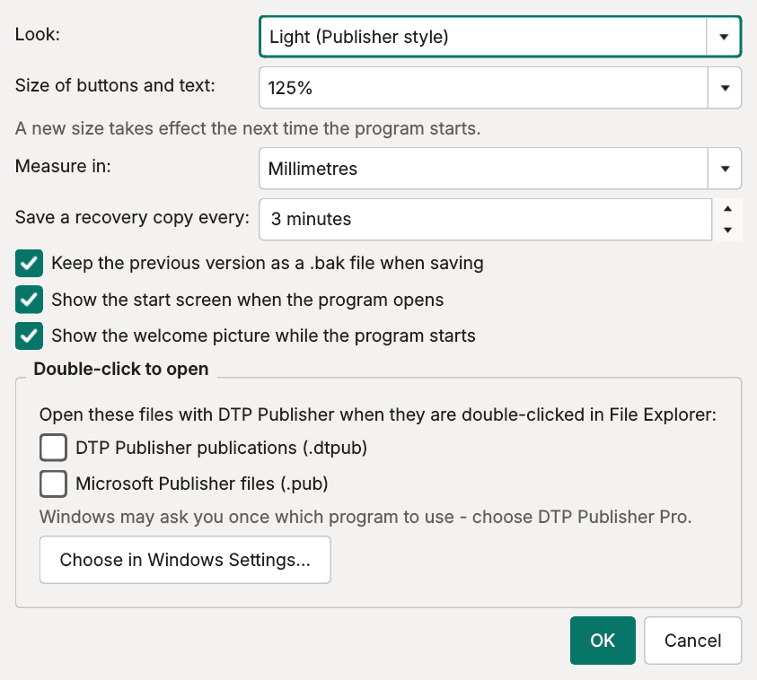
File ▸ Preferences:
| Setting | What it does |
|---|---|
| Look | Light, dark or high contrast colours for the program (not your pages). |
| Size of buttons and text | Bigger buttons and writing, from the next start. |
| Measure in | Millimetres, inches or points for all sizes. You can also click the small box where the rulers meet. |
| Save a recovery copy every | How often your work is saved in case of a power cut. |
| Keep the previous version as a .bak file | The safety copy made each time you save. |
| Show the start screen | Whether the start screen opens when the program starts. |
| Show the welcome picture | Whether the welcome picture shows while the program starts. |
| Double-click to open | See above. |
12The ribbon, tab by tab
File
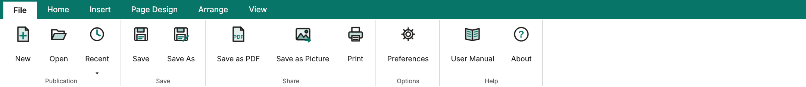
New, open, and recent publications; save; PDF, picture and print; preferences and this manual.
Home
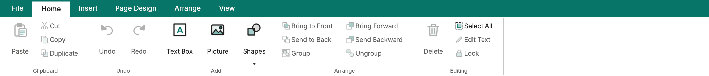
The everyday buttons: paste/cut/copy/duplicate, undo/redo, add a text box, picture or shape, front/back and group, delete, select all, edit text and lock.
Insert
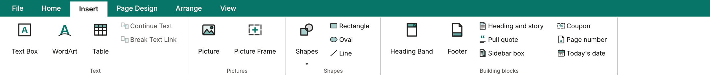
Text boxes, WordArt, tables and linked stories; pictures and empty picture frames; shapes; and the building blocks.
Page Design
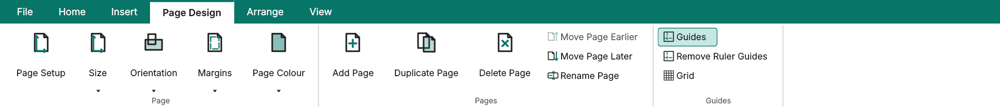
Page setup, size, orientation, margins and page colour; add, copy, delete, move and rename pages; guides and grid.
Arrange
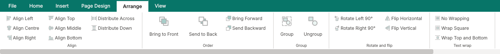
Line up and space out, order front to back, group, rotate and flip, text wrap, lock, and fill the page with copies.
View
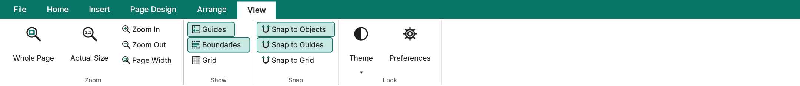
Zoom, show or hide guides, outlines and grid, choose what things snap to, and the program's look.
13Handy keys
| Keys | What they do |
|---|---|
| F1 | Open this manual |
| Ctrl+N / Ctrl+O / Ctrl+S | New / Open / Save |
| Ctrl+P | |
| Ctrl+Z / Ctrl+Y | Undo / Redo |
| Ctrl+C / Ctrl+X / Ctrl+V | Copy / Cut / Paste |
| Ctrl+D | Duplicate |
| Delete | Delete what is selected |
| Ctrl+A / Esc | Select everything on the page / let go |
| Arrow keys (with Shift for bigger steps) | Nudge what is selected |
| F2 | Type in the selected text box |
| Ctrl+B / Ctrl+I / Ctrl+U | Bold / Italic / Underline |
| Ctrl+L / Ctrl+E / Ctrl+R / Ctrl+J | Words to the left / centre / right / both edges |
| Ctrl+G / Ctrl+Shift+G | Group / Ungroup |
| Ctrl+] / Ctrl+[ | Bring forward / Send backward |
| Ctrl + mouse wheel | Zoom in and out |
| Ctrl+0 / Ctrl+1 | Whole page / actual size |
| Space + drag, or the middle mouse button | Move around the page |
| Ctrl+PgUp / Ctrl+PgDn | Previous / next page |
14When something goes wrong
I deleted something by mistake
Press Ctrl+Z, as many times as you need.
Something won't move or can't be clicked
It may be locked: click it and click Lock (Home or Arrange tab) to unlock it. If something else is on top of it, select it by name on the Objects tab.
Part of my text has disappeared
Look for the small red marker in the corner of the box: the box is too small. See When the words don't fit.
The edge of the page doesn't print
Most home printers can't print right to the edge of the paper. Keep words and important parts of photos at least 5 mm inside, or use a PDF at a print shop for edge-to-edge printing.
Labels don't line up
Check the Label sheet in Page Design ▸ Page Setup matches the number on the packet, and that the printer's own settings print at 100% (Actual size), not "fit to page". Do a test print on plain paper.
A .pub file won't open
Install LibreOffice (it's free), then try again. If it still won't open, the file may be damaged. Try opening it in Publisher on another computer and saving it again.
The program closed by itself
Start it again; it offers to bring back your work (see If the computer stops unexpectedly). Details of what went wrong are written to a file called crash.log in the program's settings folder, which helps whoever looks after the program fix it. To find it, type %APPDATA%\DTP Publisher into the address bar of File Explorer.
I can't find a file I made
The files you worked on lately are listed on the start screen and under File ▸ Recent. On the start screen, rest the mouse on one to see which folder it is in.